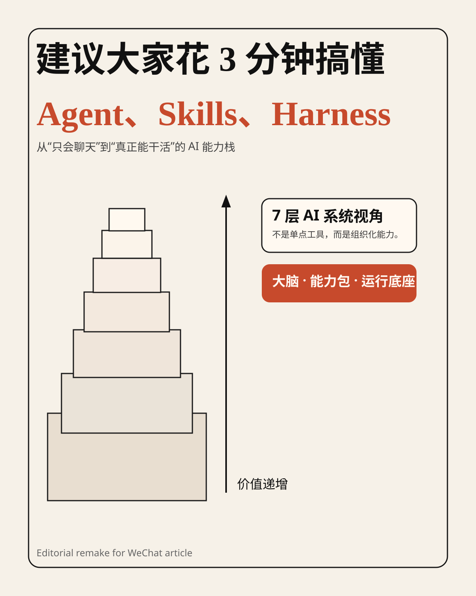
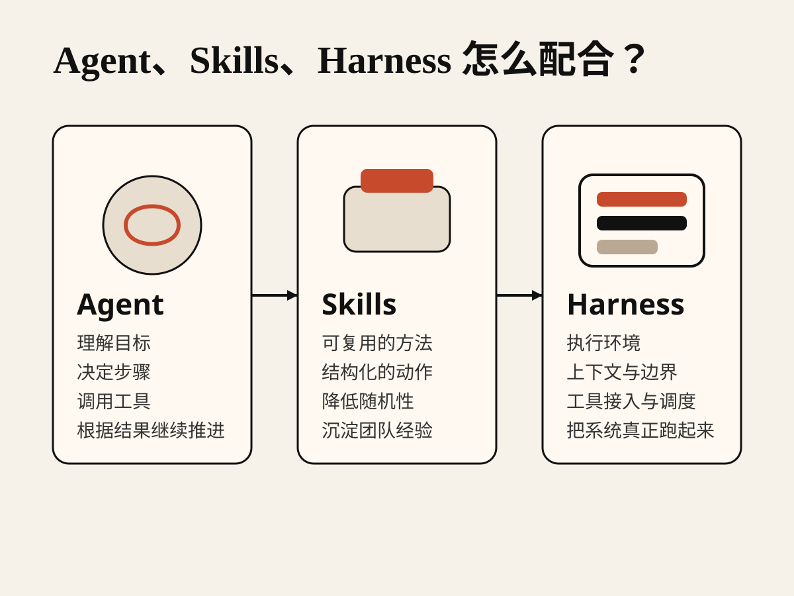
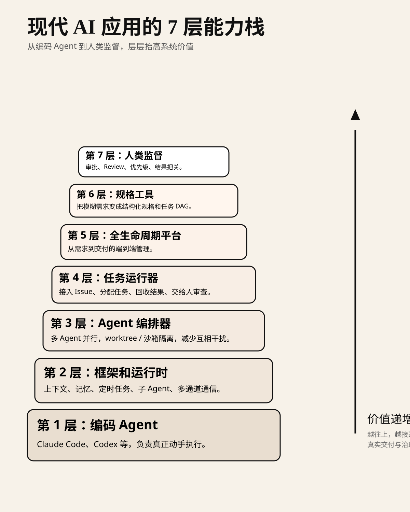
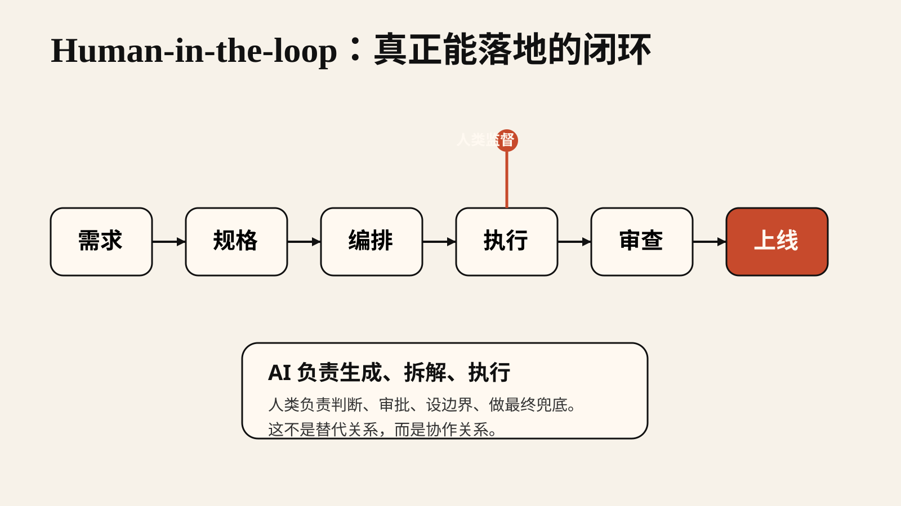

很多人一提到 AI，还停留在“会聊天、会写文案、会回答问题”这个阶段。
但真正开始做 AI 应用，尤其是做能自主执行任务的智能体系统时，你会很快遇到三个绕不开的词：
Agent
Skills
Harness
这三个概念，基本决定了一个 AI 系统是“会说话”，还是“能做事”；是“一次性 demo”，还是“能稳定落地的生产系统”。
这篇文章，我把 X 上那张信息量很大的长图，整理成一个更适合公众号读者理解的版本。
如果把一个 AI 系统看成一个团队：
Agent 是大脑，负责理解目标、做判断、发起行动。Skills 是能力包，负责把常见动作做成可重复调用的模块。Harness 是运行环境，负责给 Agent 提供边界、上下文、工具接入与执行控制。也就是说：
Agent 决定“做什么”，Skills 决定“怎么做得更稳”，Harness 决定“在什么规则里做”。

很多人之所以觉得“智能体不好用”，往往不是模型不够强，而是把这三件事全混在了一起。
结果就是：
系统当然会变得又脆又乱。
先说最容易理解的部分。
Agent 就是智能体本身，它像一个能看懂目标、拆分任务、调用工具、根据结果继续推进的“大脑”。
如果只是普通聊天，模型的任务是“给出回答”。
但一旦进入 Agent 模式，模型的任务就会升级为：
这时候，AI 不再只是回答你一句话，而是在一个任务链条里持续推进工作。
像 Claude Code、Codex 这类编码 Agent，本质上就是把大模型从“问答器”变成了“执行者”。
光有 Agent 还不够。
因为 Agent 虽然会推理，但并不意味着它每次都能稳定地把同一类任务做好。
这就需要 Skills。
你可以把 Skills 理解成：
一套被整理过、被约束过、可重复调用的能力模块。
比如：
这些都可以变成 Skills。
有了 Skills，Agent 就不用每次从零开始猜，而是能站在既有方法论上工作。
所以，Skills 的价值并不是“替代模型”，而是降低随机性，提升稳定性，沉淀组织经验。
第三个概念最容易被忽略，但往往最关键。
Harness 不是某一个模型，也不是某一个技能。
它更像是一个“运行框架”或者“操作系统外壳”，负责把 Agent、Skills、工具、上下文、权限、记忆、调度这些东西组织起来。
它决定的不是 AI 聪不聪明，而是：
一个成熟的 Harness，通常会处理这些事情：
说得更直白一点：
没有 Harness，Agent 更像一个聪明的个人；有了 Harness，Agent 才像一个能进公司上班的组织成员。
原图最有价值的地方，在于它没有停留在概念解释，而是把现代 AI 应用的落地过程拆成了 7 层。

我把它翻译成更适合产品、工程和内容从业者理解的话，大概是这样：
这是最底层，也是大众最熟悉的一层。
比如 Claude Code、Codex，本质上都属于“能直接读写代码、执行命令、修改文件”的编码 Agent。
它解决的是：
“让 AI 真正开始动手。”
当 Agent 不再只是一次性执行，而是要长期工作时，就需要运行时。
这层关注的是：
也就是说，这一层让 Agent 从“单次调用”变成“持续运行的系统角色”。
当一个 Agent 不够时，就会出现多个 Agent 的分工协作。
这时需要编排器。
它负责：
这一层的本质，是把“单兵作战”升级成“团队协作”。
再往上一层，AI 就不只是处理临时命令，而是要接业务任务。
比如接入 Issue Tracker、任务池、需求系统。
典型流程会变成：
人创建任务 -> 运行器分配给 Agent -> Agent 执行并提交结果 -> 人类审查。
到这里，AI 已经不再是单纯的辅助工具，而是被接进了真实工作流。
这一层不只关心“做任务”，而是关心从需求到交付的全链路管理。
它会把这些东西整合起来：
这意味着，AI 系统开始承担“平台能力”，而不是单点能力。
这是很多团队接下来会越来越重视的一层。
为什么？
因为真正贵的，不是“写代码”本身，而是把模糊的人类想法，变成结构化、可执行、可验收的规格。
这层的作用是：
也就是说，它把“怎么定义问题”这件事开始系统化。
最顶层不是 AI，而是人。
这点非常重要。
原图最成熟的地方，就在于它没有鼓吹“AI 自主取代人”，而是在最上层明确放回了“人类监督”。
人类在这一层做的事情包括：
换句话说：
AI 可以越来越负责执行，但最后的方向、标准和兜底，依然必须由人掌握。
它最值得反复看的一点，不是概念新，而是它把很多人脑子里模糊的直觉，整理成了一个清晰结构：
不是只有模型就够了。
不是只有 Agent 就够了。
不是加几个工具就等于智能体系统。
真正的现代 AI 应用，往往是一个从下往上逐层抬升的系统：

这也解释了为什么很多“看起来很强的 AI demo”一进真实业务就崩：
因为它只有第 1 层，最多第 2 层；
但真正的企业交付，需要的是一直往上走到第 6、第 7 层。
如果你不是在搭平台，而只是想更好地理解 AI，我建议按这个顺序理解：
Agent，理解 AI 为什么从问答变成执行Skills，理解为什么经验要模块化沉淀Harness，理解为什么系统设计决定了 AI 能否真正落地只要把这三个概念理顺，你对“智能体”这件事的理解，基本就会从模糊的流行词，升级成一个可落地的系统视角。
这张图其实讲的不是三个术语，而是 AI 应用的一次角色升级：
所以，Agent、Skills、Harness 这三个词，表面上是在讲技术概念；
本质上是在回答同一个问题：
怎样把一个“大模型”，变成一个“真正能交付结果的系统”。
如果你今天只记住一句话，我希望是这句：
Agent 是大脑，Skills 是能力模块，Harness 是把一切组织起来并确保可控运行的底座。
把这三个词搞懂，你就不只是“认识 AI”，而是开始真正理解 AI 系统了。
原始来源：
Zenzhe99 on X